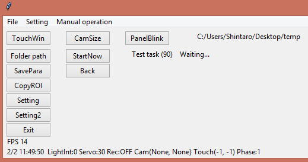
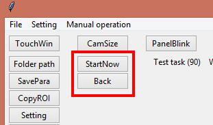
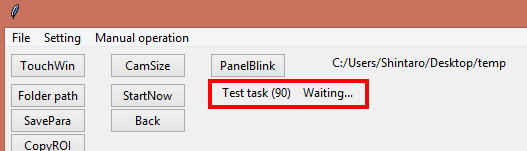
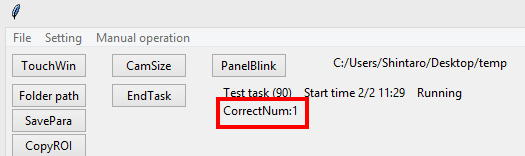

5. About "Phase 1"
After clicking "Start" button, the Phase is advanced to "1" to wait the task start time.

During Phase=1, the following code is executed. This contains only GUI arrangement and checking of task start time.
=======================================================================================================================
if Phase == 1: # Waiting phase (Task will start when the set time arrives)
if Phase1_Init == 0: # If the initialization for phase1 has not done
PutPreTaskButton() # Put "StartNow" and "Back" button on Main window
mStatusVar = StringVar(MainWindowRoot) # Create a variable for status display
mStatus = ttk.Label(MainWindowRightFrame, textvariable=mStatusVar) # Create label object and link it with Main window
mStatus.place(x=10, y=0) # Place label object on the Main window
mOngoingResultVar = StringVar(MainWindowRoot) # Create a variable for progress display
Phase1_Init = 1 # Flat that phase1 has done
mStatusVar.set('Test task (' + str(GetTaskID()) + ') Waiting...') # Show current status of the Operant House
if IsStartTime() == 1: # Check whether task start time arrives
StartNow() # Start task (Phase number will be "2")
=======================================================================================================================
if Phase1_Init == 0: # If the initialization for phase1 has not done
PutPreTaskButton() # Put "StartNow" and "Back" button on Main window
mStatusVar = StringVar(MainWindowRoot) # Create a variable for status display
mStatus = ttk.Label(MainWindowRightFrame, textvariable=mStatusVar) # Create label object and link it with Main window
mStatus.place(x=10, y=0) # Place label object on the Main window
mOngoingResultVar = StringVar(MainWindowRoot) # Create a variable for progress display
Phase1_Init = 1 # Flat that phase1 has done
This part is an initialization cade. PutPreTaskButton()places "StartNow" and "Back" buttons.

mStatusVar = StringVar(MainWindowRoot) # Create a variable for status display
ThemStatusVarholds a string which shows current status of the task.
mStatus = ttk.Label(MainWindowRightFrame, textvariable=mStatusVar) # Create label object and link it with Main window
This line create a label object which is linked withmStatusVarhere and places it in the main window withmStatus.place(x=10, y=0).
Theplace()command can place the object by indicating coordinates in pixel.

mOngoingResultVarholds a text which shows result of latest task. Here it is declared but not assigned.

mStatusVar.set('Test task (' + str(GetTaskID()) + ') Waiting...') # Show current status of the Operant House
To show a waiting message, mStatusVar.set() is used to assign the string.
if IsStartTime() == 1: # Check whether task start time arrives
StartNow() # Start task (Phase number will be "2")
When it is a time to start the task, IsStartTime()returns 1 then start the task withStartNow()command.
(StartNow()clears main window, record a task start time and adds 1 toPhase)